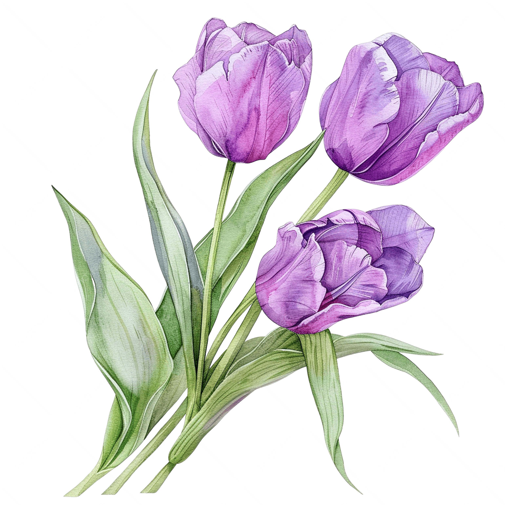

Pamilihan, or market, is where buyers and sellers exchange goods and services. I learned that markets are important because they allow people to buy the things they need and give sellers a way to earn money. Markets are also part of our everyday lives, as you can find them almost everywhere.
Pamilihan helps the community by providing jobs and opportunities for people to earn a living. For example, farmers, vendors, and small business owners can sell their products to support their families. It also helps local businesses grow and allows money to circulate within the community.
Pamilihan is important in our lives because it gives us access to basic needs such as food, clothing, and other products. It also allows us to compare prices and choose products that fit our budget. Without it, getting the things we need would be much more difficult.
Overall, I learned that pamilihan is not just about buying and selling. It also helps people earn money, supports the community, and makes our daily lives easier. This lesson taught me the importance of being a responsible consumer and making wise decisions when buying products.


